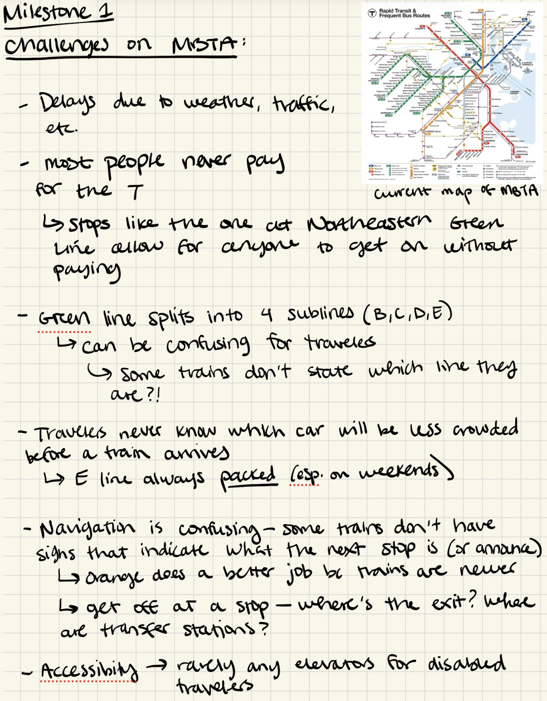
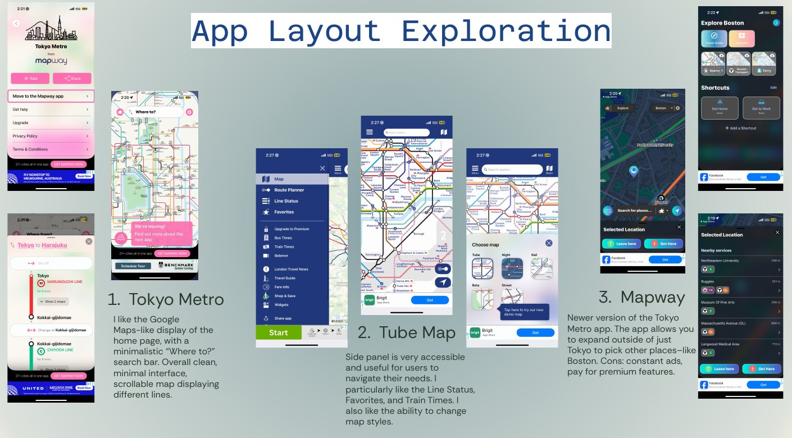
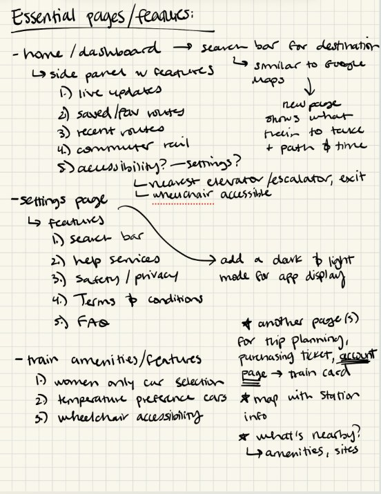
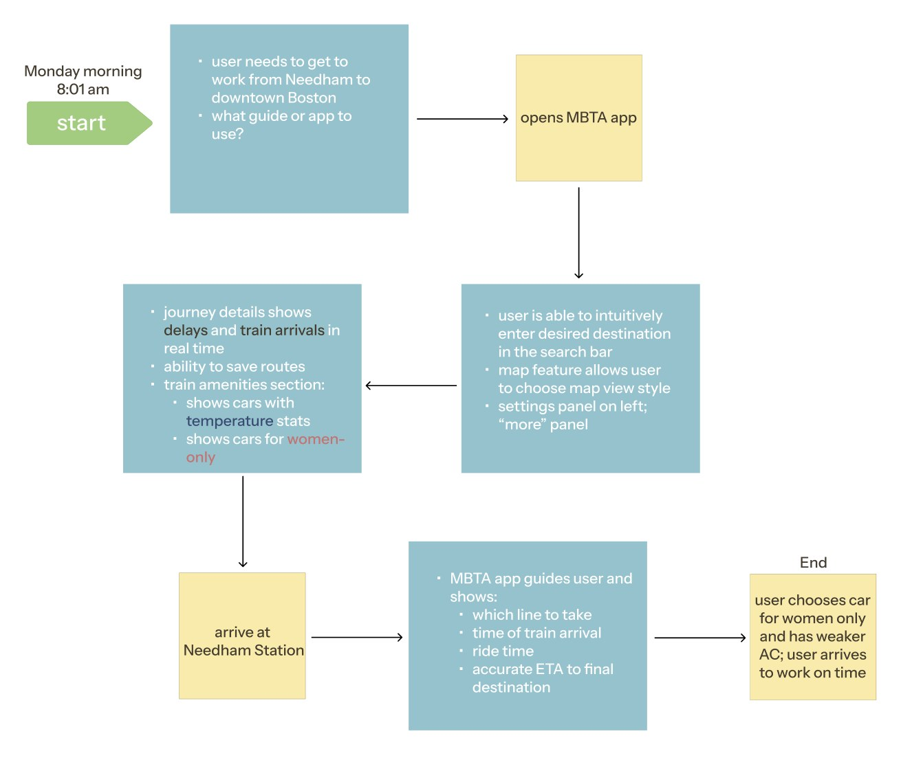
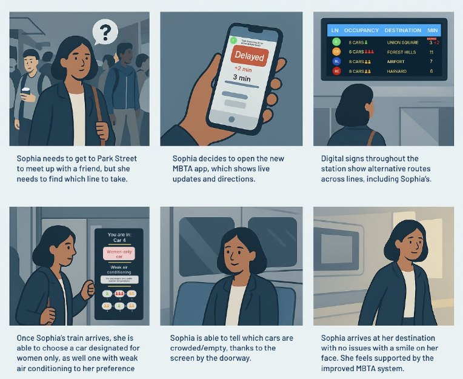
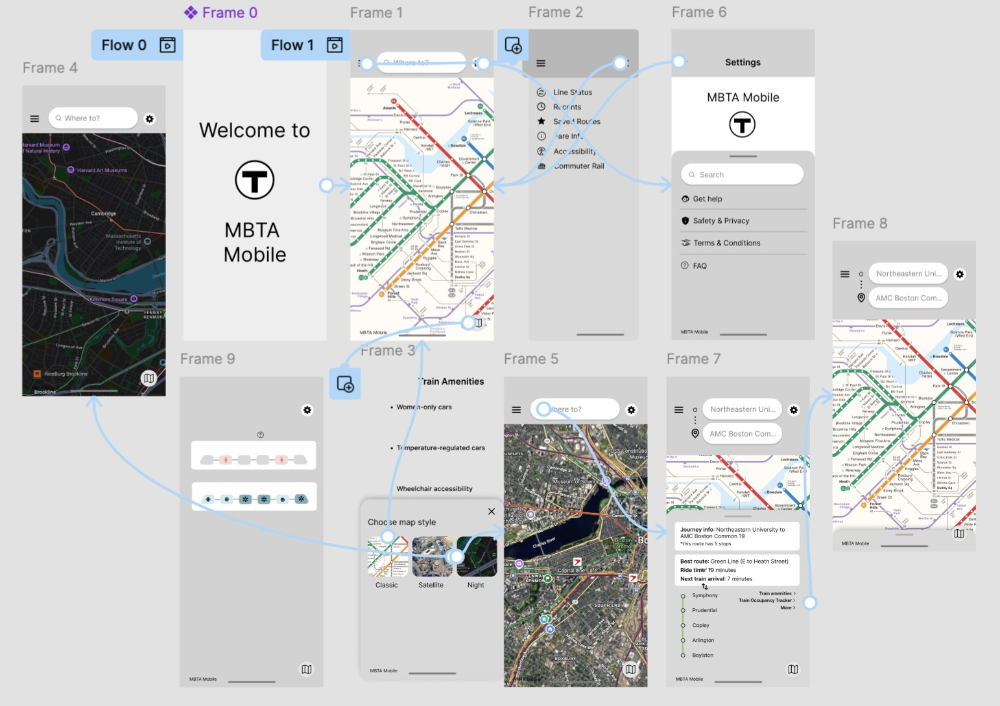

UX/UI Designer
ARTG 1270: Design Process & Practices
Fall 2025
Figma
Real-time info, convenience, safety
The problem
Riding the T means a lot of guessing: when the train will come, which line it is, and how packed it'll be.
I started by writing down everything that frustrates riders, including me, on the MBTA. Trains get delayed by weather and traffic. The Green Line splits into four branches (B, C, D, E), and some trains don't even say which one they are. You never know which car will be less crowded until it pulls in, and the E line is always packed. Some trains have no signs or announcements for the next stop, and elevators for disabled riders are rare.

How might we give commuters real-time information they can trust, so their ride feels predictable, comfortable, and safe?
Research
Who I designed for
Sophia C., 32
Marketing manager who lives in Needham and works downtown. She takes the Commuter Rail and Green Line five days a week and has a 9 AM meeting every Monday and Wednesday.
- Get to work on time and unstressed
- Avoid overcrowded cars
- Find a car that isn't freezing or boiling
- Feel safe on her commute
- Needham station has no real-time updates
- No idea which Green Line train will be less packed
- Can't tell a car's temperature until she's on it
- Late to meetings from last-minute track switches
“I just want to know: Is my train coming? How full will it be? Which car won't be freezing or boiling?”
Ideas from transit around the world
A lot of the problems I listed are already solved somewhere else, so I looked at metro systems I've used or read about for ideas.
Women-only cars
Dedicated cars that help women feel safer, especially when traveling alone.
Temperature-regulated cars
Some cars run cooler and some warmer, so riders can pick what's comfortable.
Clear direction signs
Signs on the walls show the next stops for inbound and outbound trains.
Learning from other metro apps
I also studied three transit apps. I liked Tokyo Metro's Google Maps-style home page with a simple “Where to?” search bar, Tube Map's side panel with line status, favorites, and different map styles, and how Mapway works in other cities like Boston. The downside of Mapway was constant ads and paid features.

Planning the app
I listed the essential pages and features: a home screen with a destination search, a side panel for live updates, saved routes, and commuter rail, a settings page, and a train amenities section for women-only cars, temperature preferences, and wheelchair accessibility.


Storyboard
The storyboard follows Sophia as she checks live updates in the app, sees alternate routes on station displays, picks a women-only car with weaker air conditioning, and arrives stress-free.

Version one
My first prototype was a gray wireframe flow in Figma. It had the welcome screen, the map with a search bar, the side panel, settings, map styles, a sample journey, and a first pass at the train amenities page.

- Make a working sample journey from start to finish
- Link the train amenities page to a car map showing women-only and temperature-regulated cars
- Add a live occupancy screen for each car
- Add a real color palette and font style